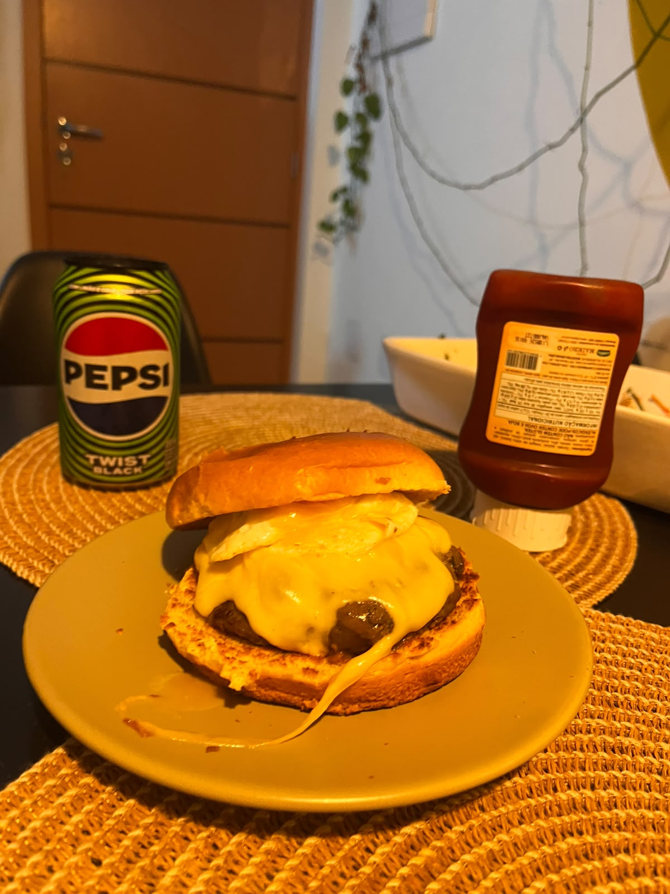
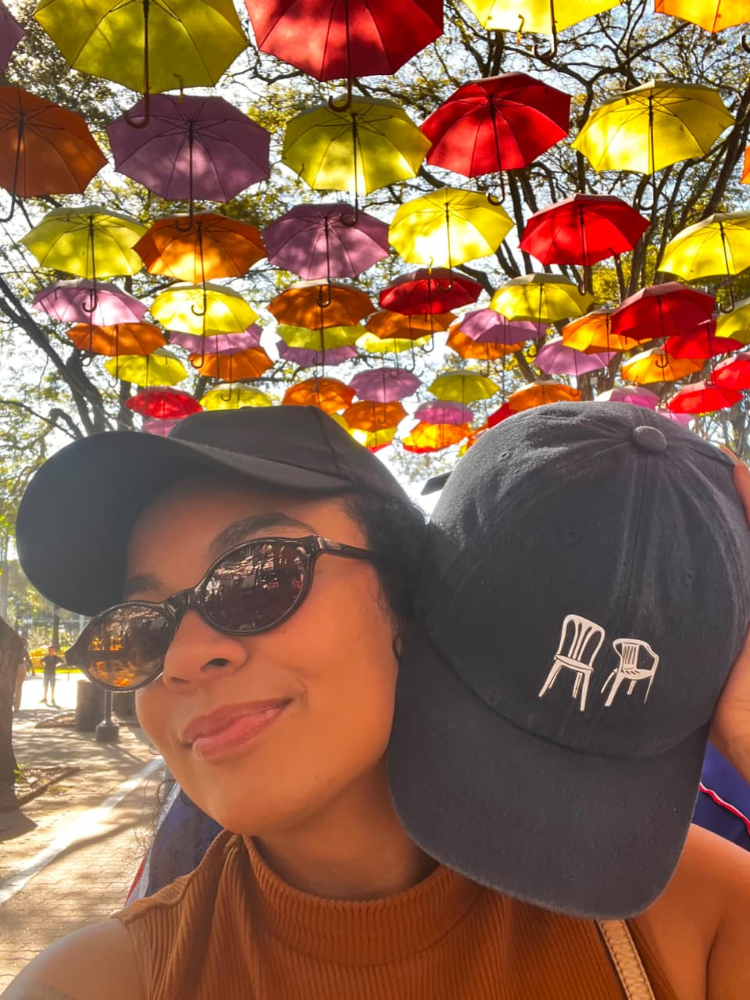
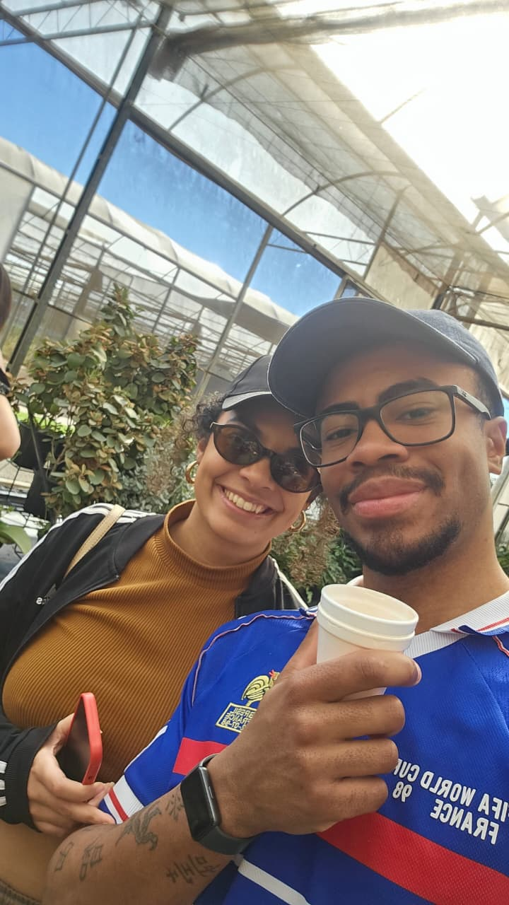
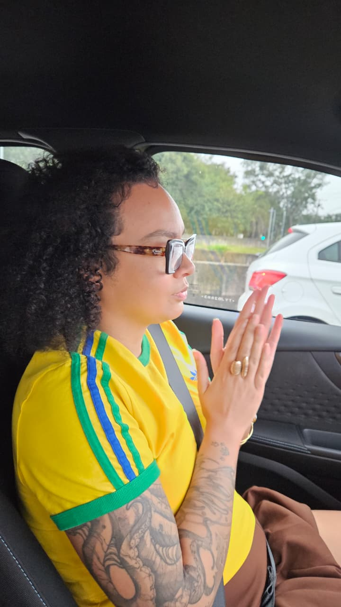
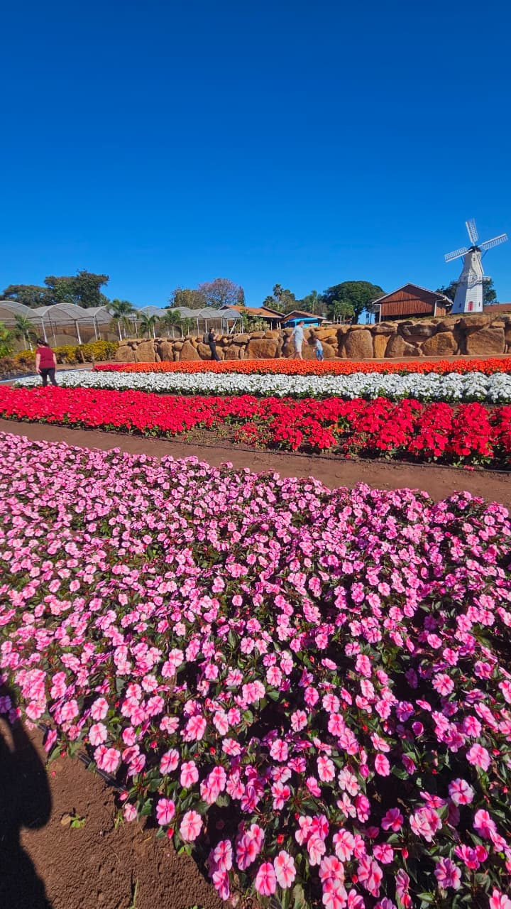
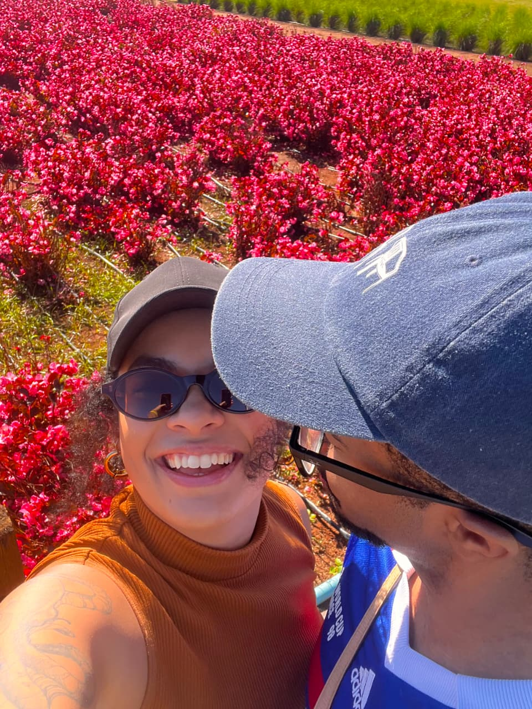

Calma, não é Vibe Coding. É engenharia de prompt
As transições são bregas mesmo, se você passar mais rápido fica melhor
Como estou sem a chave de sua casa, decidi fazer um HTML, ao invés de encher sua casa com decorações melosas de amor (frase escrita antes da despedida no aeroporto)
Passe as páginas com calma e leia tudo
Do café em um prédio curioso em Pinheiros até uma incrível Feijoada em uma cervejaria quase francesa
Do babaganoosh até o Netão BomBeef (vulgo melhor hambúrguer do Brasil?)
Do uber com som estourado até o Tim nos encarando enquanto aguardamos a pizza (com nossos super vouchers)
Admiro cada pedacinho seu, cada parte da sua trajetória até se tornar a Mariana de hoje.
Não sei se já falei isso, mas você ensina. Ensina sobre o amor, ensina coisas técnicas, ensina sobre como a vida pode ser mais bela e mais justa.
Eu não esperava me apaixonar tão rápido, mas você chegou e simplesmente roubou meu coração.
Vivemos tanto em tão pouco tempo, né?
E testar mais e mais receitas de hambúrguer

Prometo te encher de carinhos

E sempre te servir café

"Slk tio, mo molezinha aqui, tio"

Fomos até a terra das Flores somente pra descobrir que a flor mais bela e mais cheirosa vive em Santo André.

